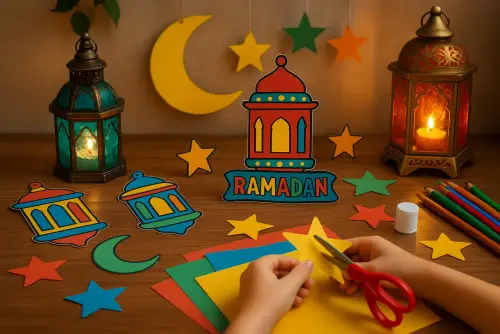
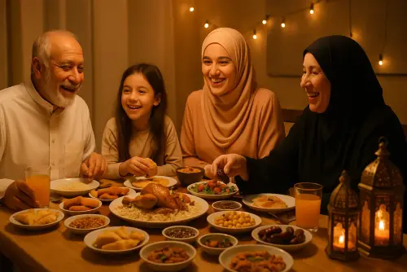

Ramadan Activities for Kids: 15+ Ways to Make It Special
Ramadan isn't just about fasting. Especially when you have little ones at home. It's about creating an atmosphere of warmth, generosity, and togetherness that your kids will carry with them for the rest of their lives.

Some of my fondest childhood memories are from Ramadan. The sound of my mother's pots clanging before iftar. The excitement of spotting the moon. The special feeling of everyone in the house being up for suhoor together, half-asleep but smiling. I want my kids to have those memories too, and I'm guessing you do as well. (And if you're looking for meaningful ways to build faith year-round, our guide to sharing Islamic stories with kids is full of ideas.)
Here are 15+ ramadan ideas for kids that have worked beautifully for our family and others. Mix and match based on your kids' ages and your energy levels (because let's be real, you're fasting too!).
1. Ramadan Countdown Calendar for Kids 🗓️
Ages: 3+
This is the one that kicks off the excitement. Get 30 small envelopes or paper pockets and number them. Put a little surprise in each — a chocolate, a dua to learn, or a kind deed to do. Hang it on the wall and let your kids open one each day. The excitement alone makes Ramadan feel like the most magical month of the year. This ramadan calendar activity for kids helps them count down to Eid.
2. Ramadan Good Deeds Chart & Charity Jar 🫙
Ages: 4+
Decorate a jar together and put it somewhere visible. Every day, the family drops in coins or bills. Kids can contribute from their own pocket money or "earn" contributions by doing extra good deeds. At the end of Ramadan, decide together where to donate it. This teaches generosity in a way kids can see. They watch the jar fill up and feel the impact of giving. Pair it with a ramadan reward chart for kids to track daily acts of kindness and watch their progress throughout the month.
3. Nightly Quran Story Time 📖
Ages: 3+
Ramadan and the Quran go hand in hand. After iftar or before bed, read one story from the Quran together. You don't need to be a scholar. Just tell it in your own words, with warmth and wonder. Kids love hearing about Prophet Yusuf's dreams, Musa parting the sea, or the Sleepers of the Cave. If you want illustrated versions that make story time even more special, our Quran Stories ebook was honestly made for exactly this. These ramadan learning activities for kids help them connect with Islamic traditions in a meaningful way.
4. Easy Ramadan Crafts for Kids: Decorate Together 🌙
Ages: 3+
Crescent moons, stars, lanterns, fairy lights — go all out! Make paper lanterns, cut out moon shapes, string up lights. When your house looks different during Ramadan, it feels different. Kids associate those decorations with the special feeling of the month, and that memory stays. These simple ramadan DIY crafts for kids require materials you already have: construction paper, scissors, glue, and markers. Even ramadan crafts for toddlers can be successful with pre-cut shapes they can glue and decorate.
5. Ramadan Lantern Craft for Kids 🏮
Ages: 4+
One of the most beloved ramadan crafts for kids is making paper lanterns (fanoos). You'll need colored construction paper, scissors, glue, and optional embellishments like glitter or stickers. Fold a piece of paper in half, cut slits from the folded edge (stopping about an inch from the open edge), unfold, and roll into a cylinder. Add a paper handle on top. Kids can decorate with Islamic patterns, stars, or Arabic calligraphy. Hang them around the house or use battery-operated tea lights inside for a magical glow. This hands-on ramadan craft keeps kids engaged and gives them something beautiful they made themselves to display all month.
6. Cook Iftar Together 👨🍳
Ages: 5+
Even little ones can help wash vegetables, stir a bowl, or arrange dates on a plate. Older kids can take on a whole dish. There's something deeply satisfying about breaking your fast with food you helped prepare. Bonus: it teaches them a life skill and keeps them busy in the last hour before Maghrib (which, let's be honest, is when everyone's patience runs thin).

7. Ramadan Coloring Pages & Printable Activities 🎨
Ages: 3+
Print out ramadan coloring pages for kids featuring mosques, lanterns, crescent moons, and Arabic calligraphy. Younger kids can color while you read them a story. Older kids can try their hand at Arabic calligraphy or geometric Islamic art patterns. These ramadan printable activities are creative, calming, and teach kids about Islamic art traditions. Keep a folder of different designs so you have fresh options throughout the month. Many free ramadan coloring pages for kids are available online, or create your own by tracing simple Islamic shapes.
8. Ramadan Worksheets for Kids 📝
Ages: 5+
Educational ramadan worksheets for kids combine learning with faith. Create or print worksheets that include: counting dates for math practice, tracing Arabic letters (Ramadan Kareem, Alhamdulillah), word searches with Islamic vocabulary, matching activities (match the dua to the situation), and writing prompts ("What I'm grateful for this Ramadan"). These activities keep kids engaged during the day when energy is low, and they're learning valuable lessons at the same time. Laminate a few worksheets and use dry-erase markers so they can be reused throughout the month.
9. Ramadan Games for Kids 🎲
Ages: 5+
Make learning about Ramadan fun with interactive ramadan games for kids. Try "Islamic Trivia" with age-appropriate questions about Ramadan and Islam, "Good Deed Bingo" where kids mark off acts of kindness throughout the week, "Ramadan Scavenger Hunt" hiding items like prayer beads, dates, or Quran around the house, or "Memory Match" with cards featuring Islamic symbols and Arabic words. For active play, organize "Charity Relay Races" where teams collect items for donation. These ramadan fun activities for kids build knowledge while keeping the atmosphere joyful and energetic.
10. Visit the Mosque for Taraweeh 🕌
Ages: 5+
Even if they can't stand for all 20 rakaat, bringing your kids for part of Taraweeh is a beautiful experience. The atmosphere of a mosque during Ramadan night prayers is unlike anything else. The recitation, the rows of people, the quiet devotion. Start with just a few rakaat and build up. The memory of those nights is priceless.
11. Moon Sighting Party 🌑
Ages: all
On the 29th night, go outside as a family to look for the crescent moon. Make it an event. Bring a blanket, some snacks, maybe binoculars. Whether you spot it or not, the experience of the whole family looking up at the sky together, waiting for Ramadan to begin (or Eid to arrive), is something kids remember forever.
12. Prepare Food Baskets for Neighbors 🧺
Ages: 4+
Put together small gift baskets with dates, treats, and a "Ramadan Mubarak" card for your neighbors, Muslim and non-Muslim alike. Let your kids help assemble and deliver them. It teaches generosity, builds community connections, and gives kids a chance to explain Ramadan to their friends in a natural, positive way.
13. Learn a New Dua Each Week 🤲
Ages: 5+
Pick four or five short duas for the month: before eating, after eating, before sleeping, entering the mosque. Write them on cards and put them where your kids will see them. Practice together. By the end of Ramadan, they'll have a handful of new duas in their heart, and that's a gift that keeps giving far beyond the month.
14. Ramadan Activities for Toddlers & Preschoolers 🌟
Ages: 2-5
Ramadan activities for toddlers and preschoolers need to be short and fun. Try half-day "practice fasts" where they skip one snack (never force it). Let them glue pre-cut star shapes onto paper. Have them help set the iftar table with napkins or dates. Read them short Quran stories with colorful pictures. Join family dua time before iftar. At this age, the goal is to link Ramadan with good feelings — excitement and togetherness and joy. Keep things simple and celebrate every small step. Even just saying "Bismillah" before breaking fast is a huge win for a toddler.
15. Suhoor Wake-Up Crew ⏰
Ages: 7+
Let the older kids be part of the suhoor experience. Yes, it means waking them up ridiculously early. But there's a special magic in eating together before dawn. Half-asleep and whispering in the quiet darkness. Some of my best Ramadan memories are from suhoor. It's a family moment you can't get at any other time.
16. Ramadan Classroom & School Activities 🏫
Ages: 5+
Whether you homeschool or want ideas to share with your child's teacher, ramadan classroom activities make the month inclusive and educational. Create a class charity project where students bring spare change for a chosen cause, organize a "Ramadan Around the World" presentation showing how different cultures celebrate, set up a ramadan school activities bulletin board with student artwork and facts, host a show-and-tell where Muslim students share their family traditions, or coordinate a virtual iftar where classmates share photos of their family meals. These ramadan daily activities for kids at school help Muslim kids feel seen and teach non-Muslim classmates about the beauty of diversity and Islamic traditions.
17. Family Dua Time Before Iftar 💚
Ages: all
In the last few minutes before Maghrib, sit together and each person makes a dua out loud. Kids can ask for anything: "I want to do well in school," "I pray for my friend who is sick," "I want a cat." (That last one comes up a lot.) It teaches them that dua is personal, powerful, and always welcome. The moment before iftar is one of the most accepted times for dua. What a beautiful way to use it.
18. Eid Prep and Countdown 🎉
Ages: all
In the last week of Ramadan, start building the Eid excitement. Plan outfits together, make Eid cards for family and friends, bake Eid cookies, wrap gifts. If your older kids have been praying always throughout Ramadan, maybe with the help of something like building a strong salah habit, Eid feels like a true celebration of what they've accomplished. And it is.
Frequently Asked Questions
What are good ramadan activities for toddlers?
Great ramadan activities for toddlers include simple crafts like decorating paper lanterns, coloring ramadan-themed pages, helping arrange dates on a plate for iftar, and participating in a ramadan countdown calendar. Toddlers can also practice half-day fasting by skipping one snack, help with simple cooking tasks, and listen to age-appropriate Quran stories. Keep activities short (10-15 minutes) and hands-on to match their attention span.
What ramadan crafts can kids make at home?
Kids can make beautiful ramadan crafts at home including paper lanterns using construction paper and glue, crescent moon and star decorations, DIY charity jars decorated with Islamic patterns, ramadan countdown calendars with pockets, hand-painted wooden crescents, paper chain garlands, and mosque silhouette art. Most ramadan crafts for kids require simple materials like paper, scissors, glue, markers, and glitter that you already have at home.
How do I explain ramadan traditions to kids?
Explain ramadan traditions to kids using simple, positive language focused on what they CAN do rather than restrictions. For example: "Ramadan is when we get closer to Allah by being extra kind, giving to people who need help, and reading Quran together as a family. Grown-ups fast during the day to practice patience and remember people who don't have food. We break our fast together at sunset, pray special night prayers, and look for the crescent moon." Use stories, hands-on activities, and let them ask questions freely.
What are fun ramadan classroom activities?
Fun ramadan classroom activities include creating a class charity project, making ramadan decorations together, reading illustrated Quran stories aloud, learning simple Arabic phrases related to Ramadan, creating ramadan good deeds charts, organizing a show-and-tell about family traditions, making ramadan crafts like paper lanterns, and hosting a virtual iftar where students share what their families eat. Teachers can also use ramadan worksheets for math (counting dates) and literacy (writing about kindness).
At what age should kids start fasting in Ramadan?
There's no fixed age, but many families start introducing partial fasts (half-day or skipping one meal) around age 8-10, depending on the child's health and readiness. Full fasting typically begins around puberty when it becomes obligatory. Make it gradual and never force it. Start with ramadan activities for preschoolers and toddlers that don't involve fasting, then gradually introduce short fasts as they show interest and readiness.
The Real Magic of Ramadan for Kids
Here's what I've realized over the years: kids don't remember the perfect iftar spreads or the Instagram-worthy decorations. They remember the feeling. The warmth of being together. The excitement of the countdown calendar. The sound of Quran being recited after dinner. The sleepy suhoor conversations.
You don't need to do all 18 of these ramadan activities for kids. Pick three or four that feel right for your family this year. Whether it's ramadan crafts for kids, ramadan games for kids, or simple ramadan coloring pages for kids, the point isn't to create a packed schedule. It's to create pockets of joy and connection that make Ramadan feel different from every other month.
Because when kids experience Ramadan as something beautiful, something they look forward to — through fun ramadan activities for kids of all ages — they'll carry that love into adulthood. And InshaAllah, they'll create the same magic for their own kids someday.
Ramadan Mubarak to your family. May it be filled with barakah, laughter, and lots of beautiful memories. 🌙